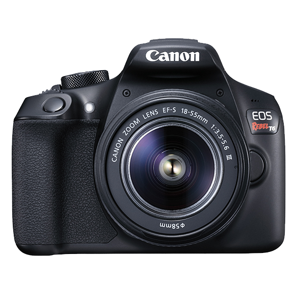

EOS Rebel T6
18.0 Megapixel CMOS (APS-C) image sensor and high-performance DIGIC 4+ Image Processor for
excellent speed and quality
ISO 100-6400 (expandable to H: 12800) for shooting from bright light to low light
Built-in Wi-Fi* and NFC** connectivity provide easy sharing to compatible smart devices,
select social media sites and the Canon Connect Station CS100 device
9-point AF system (including one centre cross-type AF point) a
nd AI Servo AF provide impressive autofocus performance with accurate results
High-performance Optical Viewfinder helps facilitate quick
and accurate focusing by firmly framing and capturing the subject at hand
Large, 3.0-inch LCD monitor with 920,000 dots shows fine details and provides easy viewing
Scene Intelligent Auto mode simplifies settings for users without extensive photography
experience
Feature Guide offers short descriptions of shooting modes, settings and effects for easy
operation
Full HD Movie mode for easy-to-use video capture
Continuous shooting up to 3.0 fps to capture action shots
Creative options made easy with imaging features like Basic+ and Creative Auto
Creative Filters including Toy Camera, Fisheye and Miniature Effect
help you capture everything with a new perspective
Auto White Balance provides "white priority," adjusting for the warmer tones under tungsten
lighting
Compatible with the full line of Canon EF and EF-S lenses
Price : $649.99
